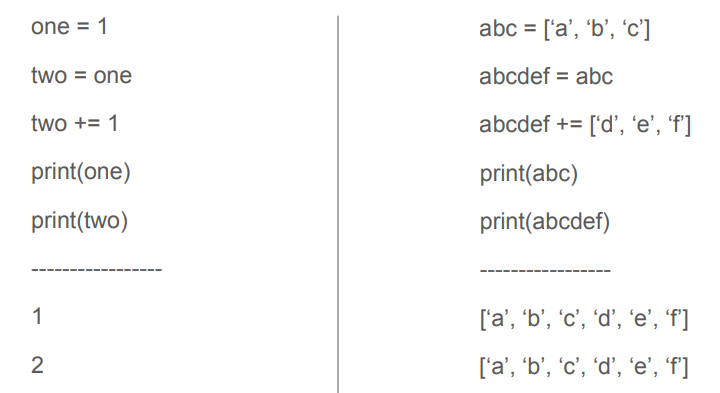

C, Pointers, gdb
我的第一个内存bug

C语言中的内存
静态内存
全局变量，可在整个程序中访问
使用
static关键字定义，和在全局范围中定义的变量一样。栈内存
函数中的局部变量。函数退出后自动销毁。
堆内存
您使用
malloc()和free()控制这些变量的创建和销毁- 由于使用结束后必须调用
free()，可能会导致内存泄漏
C语言指针
指针是一个64位整数，其值是内存中的地址。
每个变量都有一个地址，所以每个变量都会有对应的指针，包括指向指针的指针，指向指针的指针的指针，以此类推。
指针可以处理++, --, +,-这样的算数运算
指针语法
int x = 5;
int *x_addr = &x; //等同于int* x_addr = &x; 例如值为0x7ffd2766a948
*x_addr = 6; //可以使用*运算符访问基础值
int x_value = *x_addr; //解引用，这将得到6
int arr1[10]; //数组隐含了指针！稍后将详细介绍。
int *arr2[20]; //指针数组，使arr2成为指向指针的指针
void *myPtr;
试试这些！在user/下创建一个新的程序，就像在Util中一样
回到内存
char *makeABC() {
char y[3] = {'a', 'b', 'c'};
return y;
}
这有什么错误？
指针算术运算，耶！
假设我们有一些值为0x100002的char *c。
c++; // 0x100003
c += 4; // 0x100007
就该如此啊！
指针算术运算，唉...
假设我们有一些值为0x100002的int *i。
i++; //0x100006
i += 4; //0x100016
指针以基本数据类型的长度（以字节为单位）进行加减。
C语言数组
C数组是存储特定数据类型的连续内存块。变量实际就是数组起始位置的指针。
char myString[40]; // myString的类型是char*
char *myArrayOfStrings[20]; // myArrayOfStrings的类型是char**
int counting[5] = {1, 2, 3, 4, 5}; // counting类型为int*
括号运算符[]（例如访问arr[1]）只是指针算法的语法糖。
假设我们定义了int arr[4] = {5, 6, 7, 8};那么下面这些是等价的：
arr[2] = 50;
*(arr + 2) = 50; // 记住指针的算术运算！
2 [arr] = 50; // 加法是交换的(排列次序不影响结果)!
C语言数组的缺陷
我们可以通过越界访问数组来访问或修改非法内存。C不提供任何检查。
这种行为可能是意想不到的。
需要时使用您的size变量！
C语言的位运算符
一切最终都是比特位，C语言允许我们操纵这些比特。
以下均为二进制数：
& (and/与): 10001 & 10000 -> 10000
| (or/或): 10001 | 10000 -> 10001
^ (xor/异或): 10001 ^ 10000 -> 00001
~ (complement/取反): ~10000 -> 01111
<< (left shift/左移): 1 << 4 -> 10000 (binary) -> 16 (decimal)
>> (right shfit/右移): 10101 >> 3 -> 10 (binary)
我们可以将这些运算符组合起来，使标志设置变得简单：
定义位偏移flag0 = 0, flag1 =1, flag2 = 2.
要设置标志flag0和flag2：
flags = (1 << flag0) | (1 << flag2) -> 101
要检查在整型标志变量中标志是否被设置：
if(flags & flag1) -> 101 & 010 == 0 (false!)
C语言类型转换
在C语言中进行类型转换的语法是：(newType)variable
将void*转换为char*: (char*)myVoidPtr
从表达式转换为uint64：(uint64)(2 + 3), (uint64)myVoidPtr
关于一些好的例子，请参见kalloc.c和vm.c。
extern char end[]; // first address after kernel.
void kfree(void *pa) {
struct run *r;
if (((uint64)pa % PGSIZE) != 0 || (char *)pa < end || (uint64)pa >= PHYSTOP)
panic("kfree");
...
}
C语言的#include
.h文件包含声明（构成）
.c文件包含定义（实现）
基本上从不#include .c类型的文件！
include卫兵帮助处理嵌套/重复#include（在xv6中没有使用太多）
[!NOTE] include卫兵是指这样的结构
#ifndef XXXX_H
#define XXXX_H
...
#endif
使用extern关键字！将函数的可见性扩展到程序中的所有文件。
一个关于指针的示例
#include <stdio.h>
#include <stdlib.h>
void
f(void)
{
int a[4];
int *b = malloc(16);
int *c;
int i;
printf("1: a = %p, b = %p, c = %p\n", a, b, c);
c = a;
for (i = 0; i < 4; i++)
a[i] = 100 + i;
c[0] = 200;
printf("2: a[0] = %d, a[1] = %d, a[2] = %d, a[3] = %d\n",
a[0], a[1], a[2], a[3]);
c[1] = 300;
*(c + 2) = 301;
3[c] = 302;
printf("3: a[0] = %d, a[1] = %d, a[2] = %d, a[3] = %d\n",
a[0], a[1], a[2], a[3]);
c = c + 1;
*c = 400;
printf("4: a[0] = %d, a[1] = %d, a[2] = %d, a[3] = %d\n",
a[0], a[1], a[2], a[3]);
c = (int *) ((char *) c + 1);
*c = 500;
printf("5: a[0] = %d, a[1] = %d, a[2] = %d, a[3] = %d\n",
a[0], a[1], a[2], a[3]);
b = (int *) a + 1;
c = (int *) ((char *) a + 1);
printf("6: a = %p, b = %p, c = %p\n", a, b, c);
}
int
main(int ac, char **av)
{
f();
return 0;
}